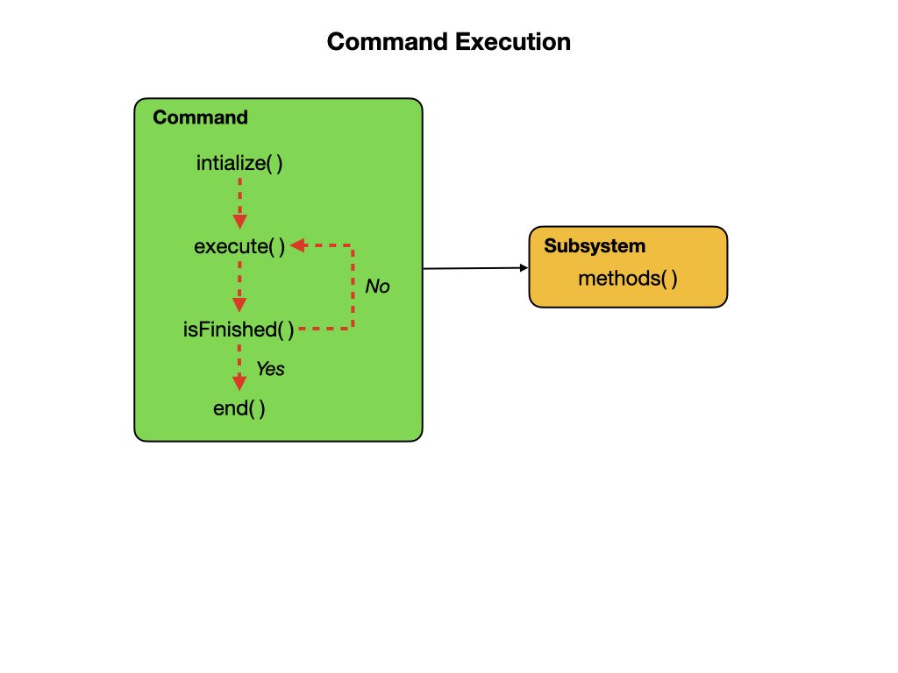
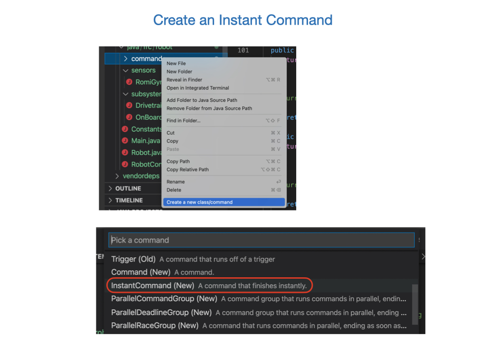

Commands
Commands define high-level robot actions or behaviors that utilize the methods defined by the subsystems. Before looking at the commands that are implemented on the Robot you should be very familiar with Procedures and State Machines from the programming sections. You should also review the FRC Documentation on Commands before continuing.
A command is a simple State Machine that is either Initializing, Executing, Ending, or Idle. Users write code specifying which action should be taken in each state. Commands run when scheduled, or in response to buttons being pressed on a gamepad or from Shuffleboard. After running the initialize() function, each command will enter its execute() phase where it runs code to accomplish its task. The method isFinished() determines if the task has been completed, after which it runs the end() function to clean things up. The execute() and isFinished() methods are called repeatedly by the main robot loop.

The DriveDistance Command
Let’s take a look at the DriveDistance command to see how this all works. This command is used to drive the robot for a specified distance. This is where Parameters are very useful since we can decide how far to drive when the program runs. This command demonstrates the classic State Machine programming paradigm where we have an Initialization Step initialize() followed the Next Step execute(), and an Input Update that repeatedly calls execute() until a threshold is met. The isFinished() method transititions it to the next major state end(), at which time the command moves to the Idle state.
public DriveDistance(double speed, double meters, Drivetrain drive) {
this.distance = meters;
this.speed = speed;
this.drive = drive;
addRequirements(drive);
}
// Called when the command is initially scheduled.
@Override
public void initialize() {
this.drive.arcadeDrive(0, 0);
this.drive.resetEncoders();
}
// Called every time the scheduler runs while the command is scheduled.
@Override
public void execute() {
this.drive.arcadeDrive(this.speed, 0);
}
// Called once the command ends or is interrupted.
@Override
public void end(boolean interrupted) {
this.drive.arcadeDrive(0, 0);
}
// Returns true when the command should end.
@Override
public boolean isFinished() {
// Compare distance travelled from start to desired distance
return Math.abs(this.drive.getAverageDistanceInch()) >= this.distance;
}
ArcadeDrive Command
The ArcadeDrive command is a simple command that will drive the robot using values provided by the joysticks. The values are passed in as parameters with a variable type is called a Supplier, which is an interface used for the [Functional Programming Paradigm](https://en.wikipedia.org/wiki/Functional_programming). This is a more advanced programming concept that we’ll examine later. The Supplier parameter type needs to be imported and defined before use.
import java.util.function.Supplier;
private final Supplier<Double> this.xaxisSpeedSupplier;
private final Supplier<Double> this.zaxisRotateSupplier;
The constructor accepts values for speed and angular rotation together with the Drivetrain subsystem.
public ArcadeDrive(
Drivetrain drivetrain,
Supplier<Double> xaxisSpeedSupplier,
Supplier<Double> zaxisRotateSupplier) {
this.drivetrain = drivetrain;
this.xaxisSpeedSupplier = xaxisSpeedSupplier;
this.zaxisRotateSupplier = zaxisRotateSupplier;
addRequirements(drivetrain);
}
The execute() method calls the Drivetrain subsystem to activate the motors.
public void execute() {
this.drivetrain.arcadeDrive(this.xaxisSpeedSupplier.get(),this.zaxisRotateSupplier.get());
}
The ArcadeDrive’s isFinished() method always returns false, meaning that the command never completes on it’s own. The reason we do this is so that it can be set as the default command. A default command runs whenever the subsystem is not running any other command. If another command is scheduled, it will interrupt the default command and return to it when the scheduled command completes.
public boolean isFinished() {
return false;
}
The setDefaultCommand() method sets the default command for the subsystem. The default command will always be running when no other commands are scheduled for that subsystem. The following statement is called in the RobotContainer class to schedule the default command for the Drivetrain.
this.drivetrain.setDefaultCommand(getArcadeDriveCommand());
Instant Commands
An Instant Command works similarly to a regular command except that there is no execute() method and the isFinished() method always returns true. The main purpose of Instant Commands commands is to quickly alter some robot state such as activating, deactivating, or resetting a subsystem. Instant Commands are used quite often.
Command Groups
Simple commands can be composed into Command Groups to accomplish more complicated tasks. There are several ways in which Command Groups can be composed, as shown the documentation. We’ll look at a full example of a Sequential Command Group from the Romi sample code.
The AutonomousDistance Command
An example of a command group is the AutonomousDistance command, which is used to drive the robot forward, turn 180 degrees, drive back, and turn another 180 degrees. That’s four commands executed one after another and is a prime candidate for a SequentialCommandGroup. The command uses the Drivetrain subsystem,so that needs to be imported together with the SequentialCommandGroup library.
The four commands are composed in the class constructor using the addCommands() method. The four command are specified using just two procedures since these procedures were parameterized. The commands are listed in the order in which we would like them to run.
package frc.robot.commands;
import frc.robot.subsystems.Drivetrain;
import edu.wpi.first.wpilibj2.command.SequentialCommandGroup;
public class AutonomousDistance extends SequentialCommandGroup {
/**
* Creates a new Autonomous Drive based on distance. This will drive out for a specified distance,
* turn around and drive back.
*
* @param drivetrain The drivetrain subsystem on which this command will run
*/
public AutonomousDistance(Drivetrain drivetrain) {
addCommands(
new DriveDistance(-0.5, 10, drivetrain),
new TurnDegrees(-0.5, 180, drivetrain),
new DriveDistance(-0.5, 10, drivetrain),
new TurnDegrees(0.5, 180, drivetrain));
}
}
Viewing the Robot Pose
As the robot drives around it might be useful to view its position and orientation on in the Simulator. We looked at that module previously so you ready’re to go onto the Pose Estimation module. There are a couple of classes that need to be implemented to do this so review that module next.
Lab - Commands
This lab continues with the one that you worked on in the Subsystems section of the training guide. You’ll learn about the following Java programming concepts:
Create a new Command or Subsystem in VSCode.
Java Inheritance where a class inherits attributes and methods from one class to another.
Method Parameters the syntax used to pass parameters to methods.
There are two tasks for this lab:
Create a command to reset the Odometry.
Add the command to the SendableChooser.
Add Reset Odometry Command
For testing purposes it’s useful to have a command that resets the odometry back to zero.
We’re going to create an InstantCommand called ResetOdometry from the left files panel in VSCode. Right mouse-click on the commands folder and select “Create a new class/command”. Next, select “InstantCommand” from the dropdown, and enter ResetOdometry for the name of your new command.

Notice that this command only includes the constructor and the initialize() function. This is because we’re just going to do a single instantaneous task that will execute quickly and then exit. Your command extends the InstantCommand class, which means that it inherits all of the attributes and methods defined in that class.
This command is going to call methods in the Drivetrain subsystem, so you must pass that in as a parameter to the ResetOdometry constructor. When passing a parameter you must tell the method what the parameter type is. In this case, the parameter type is Drivetrain.
public ResetOdometry(Drivetrain drive)
Parameters act as variables inside a method. A constructor is a special method that initializes our ResetOdometry command object. If we want to use the Drivetrain object with the other ResetOdometry methods, then we’re going need to assign it as an attribute of the command. So, place the following inside the constructor.
m_drive = drive;
We need of course to define the m_drive variable, so place this above the contructor but inside of the ResetOdometry class. You’re also going to need to import the Drivetrain class.
private final Drivetrain m_drive;
The Drivetrain is added to the command as a requirement. This will prevent any other commands from using the Drivetrain subsystem while this command is executing.
When you’re done your changes should look like this:
private final Drivetrain this.drive;
public ResetOdometry(Drivetrain drive) {
this.drive = drive;
// Use addRequirements() here to declare subsystem dependencies.
addRequirements(m_drive);
}
In the initialize() function call the following two methods. You can see now why we made the Drivetrain object an attribute of our ResetOdometry command.
// Called when the command is initially scheduled.
@Override
public void initialize() {
m_drive.resetGyro();
m_drive.resetEncoders();
}
That’s all that’s needed to create this command. The command will just run initialize() and then exit since there’s no execute() function. The isFinished() function is just set to true by default.
You’re done with this task!
Add the command to the SendableChooser.
The ResetOdometry command that you just created should be executable from the dropdown menu in the Simulator or Shuffleboard. For this we’ll use the SendableChooser class that simplifies the process of managing and selecting between different operational modes or routines in an FRC robot.
Take the Instant Command that you just created and add it the end of the SendableChooser menu in RobotContainer.
m_chooser.addOption("Reset Odometry", new ResetOdometry(m_drivetrain));
In order to make the command accessible from RobotContainter you’ll need to import the ResetOdometry command.
You’re now done with this task!
Implement Slew Rate Limiter Filter
You may have noticed that the movements of the robot are very sudden. So much so that the tires may even skid a little at the start of each motion. In order to reduce that we can add a SkewRateLimiter filter. Refer to the FRC Slew Rate Limiter documentation to learn more about these filters. In this lab we’ll create a slew rate filter to give more control over the speed of the robot.
You’ll need a separate filter for the forward and backwards driving and for the turns. These are defined as member variables in the Drivetrain class.
We don’t want to use this filter unless we’re very specific about it so create a new method in the Drivetrain class called rateLimitedArcadeDrive() to use the filters. You’ll also need to update the ArcadeDrive command to use the new rateLimitedArcadeDrive() method of the Drivetrain.
References
FRC Documentation - Command Based Programming
FRC Documentation - The Command Scheduler
FRC Documentation - Command Groups
Java Tutorial on W3Schools